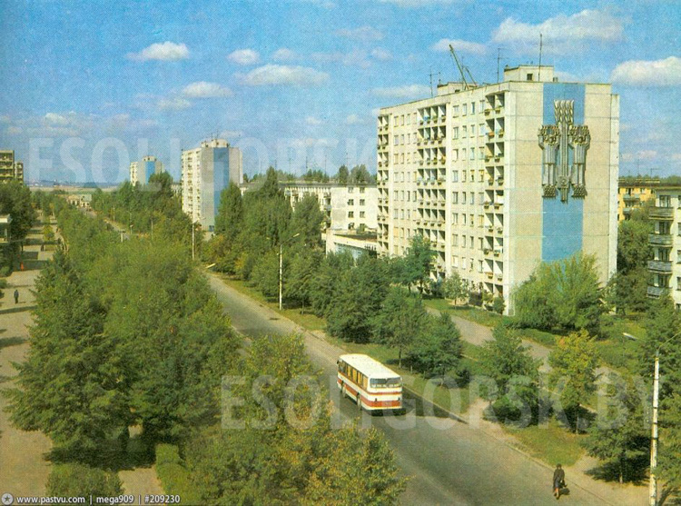
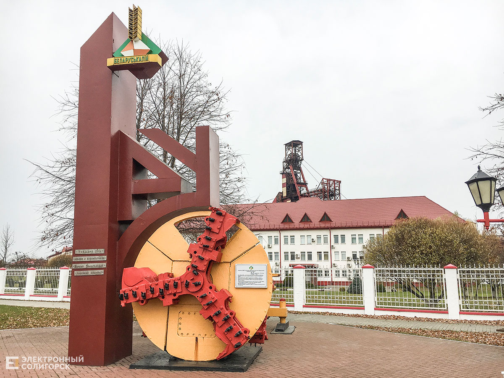
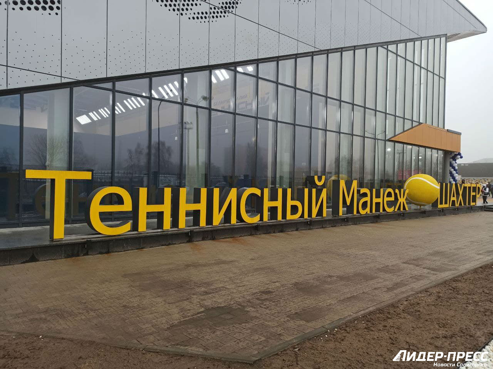

Основан в 1958 году.
Солигорск возник в связи с открытием и промышленной разработкой калийной соли в районе деревень Вишнёвка, Покровка, Ковалёва Лоза, Теслин, Песчанка.
В мае 1958 года было принято решение начать строительство нового комбината на базе Старобинского месторождения и ввести в строй первую очередь в 1963 году. Строительство было объявлено Всесоюзной ударной комсомольской стройкой. Комсомольская организация стройки насчитывала в своих рядах 1500 человек.
10 августа 1958 года около деревни Чижевичи произошёл митинг, посвящённый закладке первого символического камня нового города. На небольшом обелиске надпись: «10.08.1958 г. здесь заложен г. Ново-Старобинск». Спустя годы первый памятник перенесли: в 1968 году к 10-летию Солигорска за клубом строителей был установлен камень с надписью, посвящённый торжественному митингу по закладке города. В 1978 году этот камень был перенесён в сквер имени Ленинского Комсомола, напротив клуба строителей, где был возведён памятник в честь основания города.
Первый генеральный план застройки Солигорска был разработан архитекторами института «Белгоспроект» на 14 — 16 тысяч жителей. Согласно плану, город состоит из трёх жилых районов: западного, северного и южного, разделённых между собой городскими магистралями.
Всё началось со строительства в 1958 году на месте д. Вишнёвка Старобинского района, посёлка Новостаробинск, который уже через год переименовывается в рабочий посёлок Солигорск.
С 1959 года начал застраиваться северный район. Основной структурной единицей города принят микрорайон.
В 1958 году с одной стороны новостроек несла свои воды тихая полноводная река Случь, с другой раскинулся огромный лесной массив. Возведение улиц города, а затем водохранилища осуществлялось на месте постепенно сносимых деревень Вишнёвка, Ковалёва Лоза, Песчанка, Покровка, Крутой берег, Сельцо, Теслин.
Название Ново-Старобинск осталось запечатлённое в камне и памяти первостроителей. В некоторых документах Старобинского райисполкома новостройка именовалась Ново-Старобинском, официально так посёлок не назывался. Город документально получил название 8 августа 1959 года — рабочий посёлок Солигорск. 18 сентября 1959 года решением Старобинского райисполкома первым председателем рабоче-поселкового Совета депутатов трудящихся был утверждён Герасимович Михаил Антонович. 22 мая 1960 года состоялись первые выборы в рабпоселковый Совет.
Строящийся Солигорск был разбит на строительные кварталы, первоначально улицам присваивались номера. Исторической зоной Солигорска является строительный квартал № 23, от этого места разворачивался город. Улицу по праву можно считать ровесницей Солигорска. Именно на ней возле первого символического камня памятника были заложены фундаменты первых зданий — одноэтажных общежитий на 50 человек каждый. В апреле 1959 года были сданы и заселены шесть общежитий. 15 января 1959 года был заложен первый 16- квартирный двухэтажный кирпичный дом, заселён был он уже в середине декабря 1959 года. Он находится на улице Строителей, дом 15.
18 мая 1959 года Старобинский райисполком решил присвоить названия первым улицам: Строительная — в честь строителей калийного комбината, города и Шахтерская — в честь первопроходцев подземных недр.
17 августа 1959 года улице № 17 дали название Вишнёвая, это третья улица в строящемся жилом городке. Название улица получила не случайно: застройка велась на месте сносимой деревни Вишневка. Название просуществовало недолго, уже 7 января 1960 года оно было упразднено: улица Вишнёвая стала продолжением новой улицы № 13 — улицы Строителей (восточная часть). Тогда же исполком поселкового Совета рабочего посёлка Солигорска присвоил наименование тринадцати улицам: улица № 1 получила название М. Горького, улица № 2 — Ленинского Комсомола, улица № 7 — К. Заслонова, улица № 12 — Железнодорожная. На карте города строительные кварталы свои номера поменяли на названия улиц Коммунальная, Школьная, Гастелло, Гуляева. 13 апреля 1962 года в связи с тем, что на территории Солигорска имелось 2 улицы с созвучными названиями «Строителей» и «Строительная», последняя переименована в Пионерскую. В дальнейшем в городе Солигорске появлялись новые улицы, старые перестраивались, их названия изменялись. При сносе шлакобетонных, деревянных, каркасно-засыпных, сборно-щитовых и саманных домов сохранить месторасположение старых улиц не возможно.
В июле 1959 года приказом по Минскому областному отделу здравоохранения была утверждена медико-санитарная часть для оказания медицинской помощи шахтёрам, строителям, жителям города. В помещении барачного типа по улице Железнодорожная, 2 (здание снесено) была развёрнута поликлиника, в которой предусматривался приём больных в отделениях терапии, хирургии. Позднее развернули стационар на 35 мест, врачей — 9 человек, среди них начальник медсанчасти К. Я. Мележко. Росли комбинаты, увеличивалась численность жителей города. В конце 1959 года началось строительство городской поликлиники на 500 посетителей, а годом позже — поликлиники калийных комбинатов — на 250 посетителей.
В конце 1962 года начинается строительство больничного комплекса на 300 коек, корпуса и отделения которого поочерёдно сдаются в эксплуатацию с июня 1965 года.
Народное образование Солигорска началось с решения № 315 Старобинского райисполкома. В рабочем посёлке Солигорске 1 сентября 1959 года была открыта начальная русская школа на четыре класс-комплекта. Она открылась в трёх комнатах под одной крышей с поликлиникой в доме по улице Железнодорожная, 2. Первым директором школы была Н. Г. Новик. Первого сентября 1960 года открыла двери первая средняя школа на 520 мест. Сюда переехала и русская школа. Для школы возвели трёхэтажное здание по улице Строителей, 10, где теперь размещён учебно-производственный межшкольный комбинат. К первому сентября 1963 года начала работу средняя школа № 2. Строительство школ было жизненной необходимостью для города, средней возраст жителей которого не превышал тогда 26 лет. С интервалом в 2-3 года открывались новые школы.
4 ноября 1959 года был возведён клуб строителей на 250 мест. Это одно из самых первых зданий по улице Л. Комсомола (совр. Л. Комсомола, 42). Позднее к клубу была сделана пристройка, и он стал называться Домом культуры строителей. Дом культуры строителей был центром культурной жизни молодёжи города. Стало хорошей традицией солигорчан в те годы летом на берегу реки Случь проводить молодёжные фестивали. Первый такой фестиваль состоялся в июне 1961 года.
13 августа 1960 года в строительном квартале № 23 открыт первый универмаг (улица Л. Комсомола, 44). С 4 августа 1960 года в Солигорске заработали цеха комбината бытового обслуживания, а с октября 1960 года город имел собственный хлебозавод.
На пересечении улиц Строителей и Л. Комсомола был сформирован культурно-торговый центр рабочего Солигорска. Здесь проходили первые митинги и демонстрации горожан. Отсюда пошли первые загородные автобусы и автобусы городских маршрутов. В 1960 году на улице Строителей устанавливается стандартный сборно-щитовой дом, в котором размещается первая автостанция (совр. ул. Строителей, 18).
Первые ясли на 120 мест приняли детей возрастом от трёх месяцев до трёх лет 30 ноября 1960 года. Ясли располагались в специально отстроенном здании (ул. М. Горького, 27).
В мае 1961 года в приспособленном помещении по ул. К. Заслонова открылась первая в городе библиотека.
Город застраивался новыми современными многоэтажными домами. В 1960 году начинается строительство четырёхэтажных кирпичных домов. Один из первых таких домов находится по ул. Л. Комсомола, 16. В 1961 году сдан первый крупноблочный четырёхэтажный дом (ул. Л. Комсомола, 36). В феврале 1962 года строится первый крупнопанельный дом (ул. Л. Комсомола, 14). С 1963 года началась массовая застройка города 5-этажными панельными домами, так называемыми «хрущёвками». В 1967 году в городе появился первый девятиэтажный кирпичный дом (ул. Козлова, 24). Из сохранившихся первых 16-квартирных домов, построенных в 1960 году — реконструированный дом по улице Железнодорожная, 16.
8 апреля 1961 года торжественно сдан в эксплуатацию первый в Солигорске широкоэкранный кинотеатр «Солигорск» (в настоящее время здание школы искусств городского отдела культуры). Второго июля этого же года после возведения ретрансляционного телевизионного центра (установлена и смонтирована передаточная антенна) появилась возможность приёма передач Минской телестудии.
В строительном квартале № 23 с 1 сентября 1961 года начался первый учебный год в Солигорской музыкальной школе (ул. Строителей, 11. Здание снесено). В ноябре 1961 года начались занятия в Солигорском горнохимическом техникуме. На вечернее отделение принято 140 человек. Калийное производство нуждалось в профессиональных кадрах. В сентябре 1962 года на дневное отделение техникума на первый курс принято 180 человек, 300 учащихся приступило к занятиям на вечернем отделении.
Летом 1962 года закончено строительство Солигорской железнодорожной ветки. Станция «Солигорск» находилась в центре современного города, железнодорожные пути пролегали между улицами Железнодорожной и К. Заслонова. От станции взяла своё начало улица Ленина. Отсюда отъезжали междугородние автобусы. 5 июня 1962 года отправился первый пассажирский поезд по маршруту «Солигорск — Слуцк». Долгое время здание старого вокзала использовалось как местный молочный рынок. К настоящему времени старое здание вокзала снесено. 1 августа 1984 года возведено новое здание железнодорожного вокзала и автовокзала.
3 июля 1962 года Солигорский исполком назвал новую городскую улицу улицей Мира (совр. ул. Козлова)
| Национальность | Кол-во чел. | % |
| Белорусы | 88811 | 86.82% |
| Русские | 8439 | 8,25 % |
| Украинцы | 1141 | 1,12 % |
| Поляки | 185 | 0,18 % |
| Татары | 60 | 0,06 % |
| Армяне | 52 | 0,05 % |
| Азербайджанцы | 36 | 0,04 % |
| Евреи | 34 | 0,03 % |
| Немцы | 30 | 0,03 % |
| Литовцы | 20 | 0,02 % |
| Молдаване | 20 | 0,02 % |
| Казахи | 10 | 0,01 % |
| Чуваши | 10 | 0,01 % |
| Удмурты | 10 | 0,01 % |
| Всего | 98858 | |
В городе имеется 11 общеобразовательных школ, один лицей и три гимназии. Также в Солигорске работают 3 учреждения среднего специального образования (колледжи). Существуют организации внеклассной воспитательной работы, в которые входят 11 специализированных детских учреждений. Среди них — школа искусств, художественная школа, станция юных техников, музыкальная школа, детский театр танца, краеведческий музей, центр детского творчества.
В Солигорске действуют 3 учреждения среднего специального образования:
Для проведения досуга к услугам горожан городской дворец культуры, ДК «Строителей», Центр культуры и досуга, сеть библиотек, широкоформатный кинотеатр «Зорка Венера» на 806 мест. Имеется ряд любительских объединений — клубы молодых поэтов и авторской песни. Также город упомянут в песне «Геологическая».
Музеи:
Памятник Владимиру Ильичу Ленину расположен рядом с центральной площадью города, на пересечении улиц Ленина и Козлова. Памятник В. И. Ленину выполнен в форме бюста установленного на монументе. Автор памятника известный советский скульптор А. О. Бембель. Памятник установлен в 1980 году лишь через 22 года после создания города.
Памятник в честь шахтёров-первопроходцев. Установлен в Солигорске 28 августа 1977 года. В центре монументального произведения, которое олицетворяет необычайную силу человека, подарившего земле камень урожайности, фигура шахтёра-первопроходца, вышедшего из забоя. Задумку архитекторов монумента — С. Ф. Ткаченко и В. М. Блохина — воплотил в жизнь скульптор Г. В. Буралкин. Памятник выполнен из бетона, скульптура шахтёра облицована медью. Общая высота монумента — 6 метров. Расположен в районе центрального банка.
Первый проходческий комбайн Солигорска[20]. В августе 1960 года именно этот комбайн ШБМ-2 весом 32 тонны был спущен в шахту 1 РУ. В настоящее время комбайн поднят на поверхность и установлен в виде памятника на перекрёстке возле 1РУ.
В городе 2 стадиона на 8 тысяч мест, ледовый дворец на 2 тысячи мест, 2 легкоатлетических манежа, 4 бассейна и 6 минибассейнов, 26 спортивных залов, теннисный манеж.
4 ДЮСШ на 2,5 тысячи человек.
Известна солигорская футбольная команда «Шахтёр», выигравшая немало трофеев в белорусских первенствах.
В 1999 году образована волейбольная команда «Шахтоспецстрой» позже переименованная в «Шахтёр».
С недавних пор в открытом чемпионате Белоруссии по хоккею успешно выступает также и местный хоккейный клуб «Шахтёр».
